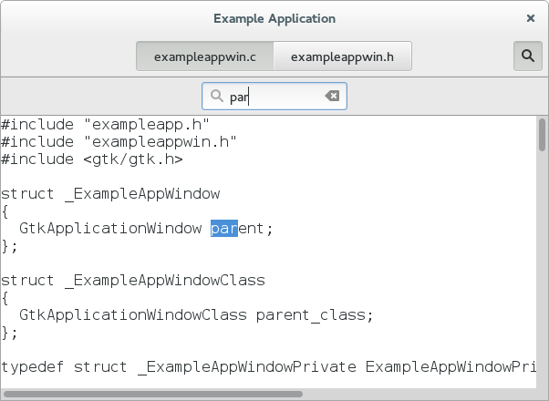
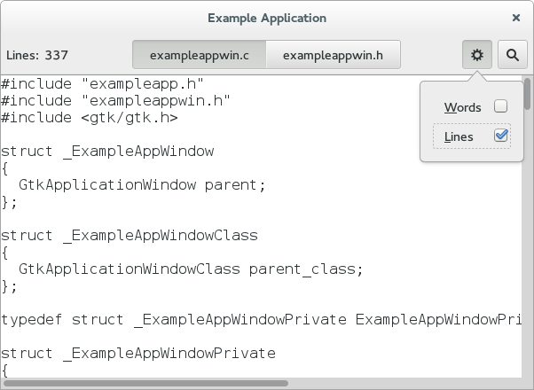

Getting Started with GTK+
GTK+ is a widget toolkit. Each user interface created by GTK+ consists of widgets. This is implemented in C using GObject, an object-oriented framework for C. Widgets are organized in a hierachy. The window widget is the main container. The user interface is then built by adding buttons, drop-down menus, input fields, and other widgets to the window. If you are creating complex user interfaces it is recommended to use #GtkBuilder and its GTK-specific markup description language, instead of assembling the interface manually. You can also use a visual user interface editor, like Glade.
GTK+ is event-driven. The toolkit listens for events such as a click on a button, and passes the event to your application.
This chapter contains some tutorial information to get you started with GTK+ programming. It assumes that you have GTK+, its dependencies and a C compiler installed and ready to use. If you need to build GTK+ itself first, refer to the Compiling the GTK+ libraries section in this reference.
Basics
To begin our introduction to GTK, we'll start with a simple signal-based Gtk application. This program will create an empty 200 × 200 pixel window.

Create a new file with the following content named example-0.c.
You can compile the program above with GCC using: gcc `pkg-config --cflags gtk+-3.0` -o example-0 example-0.c `pkg-config --libs gtk+-3.0`
Note
For more information on how to compile a GTK+ application, please refer to the Compiling GTK+ Applications section in this reference.
All GTK+ applications will, of course, include gtk/gtk.h, which
declares functions, types and macros required by GTK+ applications.
Warning
Even if GTK+ installs multiple header files, only the top-level
gtk/gtk.hheader can be directly included by third party code. The compiler will abort with an error if any other header is directly included.
In a GTK+ application, the purpose of the main() function is to create a
#GtkApplication object and run it. In this example a #GtkApplication
pointer named app is called and then initialized using
gtk_application_new().
When creating a #GtkApplication you need to pick an application
identifier (a name) and input to gtk_application_new() as parameter.
For this example org.gtk.example is used but for choosing an
identifier for your application see this
guide. Lastly
gtk_application_new() takes a GApplicationFlags as input for your
application, if your application would have special needs.
Next the activate signal
is connected to the activate() function above the main() functions. The
activate signal will be sent when your application is launched with
g_application_run() on the line below. The gtk_application_run()
also takes as arguments the pointers to the command line arguments
counter and string array; this allows GTK+ to parse specific command
line arguments that control the behavior of GTK+ itself. The parsed
arguments will be removed from the array, leaving the unrecognized ones
for your application to parse.
Within g_application_run the activate() signal is sent and we then
proceed into the activate() function of the application. Inside the
activate() function we want to construct our GTK window, so that a
window is shown when the application is launched. The call to
gtk_application_window_new() will create a new #GtkWindow and store
it inside the window pointer. The window will have a frame, a title
bar, and window controls depending on the platform.
A window title is set using gtk_window_set_title(). This function
takes a GtkWindow* pointer and a string as input. As our window
pointer is a GtkWidget pointer, we need to cast it to GtkWindow*. But
instead of casting window via (GtkWindow*), window can be cast
using the macro GTK_WINDOW(). GTK_WINDOW() will check if the pointer
is an instance of the GtkWindow class, before casting, and emit a
warning if the check fails. More information about this convention can
be found
here.
Finally the window size is set using gtk_window_set_default_size and the window is then shown by GTK via gtk_widget_show_all().
When you exit the window, by for example pressing the X, the g_application_run() in the main loop returns with a number which is saved inside an integer named "status". Afterwards, the #GtkApplication object is freed from memory with g_object_unref(). Finally the status integer is returned and the GTK application exits.
While the program is running, GTK+ is receiving events. These are typically input events caused by the user interacting with your program, but also things like messages from the window manager or other applications. GTK+ processes these and as a result, signals may be emitted on your widgets. Connecting handlers for these signals is how you normally make your program do something in response to user input.
The following example is slightly more complex, and tries to showcase some of the capabilities of GTK+.
In the long tradition of programming languages and libraries, it is called Hello, World.

Create a new file with the following content named example-1.c.
You can compile the program above with GCC using: gcc `pkg-config --cflags gtk+-3.0` -o example-1 example-1.c `pkg-config --libs gtk+-3.0`
As seen above, example-1.c builds further upon example-0.c by adding a
button to our window, with the label "Hello World". Two new GtkWidget
pointers are declared to accomplish this, button and button_box. The
button_box variable is created to store a #GtkButtonBox which is
GTK+'s way of controlling the size and layout of buttons. The
#GtkButtonBox is created and assigned to gtk_button_box_new() which
takes a #GtkOrientation enum as parameter. The buttons which this box
will contain can either be stored horizontally or vertically but this
does not matter in this particular case as we are dealing with only one
button. After initializing button_box with horizontal orientation, the
code adds the button_box widget to the window widget using
gtk_container_add().
Next the button variable is initialized in similar manner.
gtk_button_new_with_label() is called which returns a GtkButton to
be stored inside button. Afterwards button is added to our
button_box. Using g_signal_connect the button is connected to a
function in our app called print_hello(), so that when the button is
clicked, GTK will call this function. As the print_hello() function
does not use any data as input, NULL is passed to it. print_hello()
calls g_print() with the string "Hello World" which will print Hello
World in a terminal if the GTK application was started from one.
After connecting print_hello(), another signal is connected to the
"clicked" state of the button using g_signal_connect_swapped(). This
functions is similar to a g_signal_connect() with the difference lying
in how the callback function is treated. g_signal_connect_swapped()
allow you to specify what the callback function should take as parameter
by letting you pass it as data. In this case the function being called
back is gtk_widget_destroy() and the window pointer is passed to it.
This has the effect that when the button is clicked, the whole GTK
window is destroyed. In contrast if a normal g_signal_connect() were
used to connect the "clicked" signal with gtk_widget_destroy(), then
the button itself would have been destroyed, not the window. More
information about creating buttons can be found
here.
The rest of the code in example-1.c is identical to example-0.c. Next section will elaborate further on how to add several GtkWidgets to your GTK application.
Packing
When creating an application, you'll want to put more than one widget inside a window. When you want to put more than one widget into a window, it becomes important to control how each widget is positioned and sized. This is where packing comes in.
GTK+ comes with a large variety of layout containers whose purpose it is to control the layout of the child widgets that are added to them. See Layout Containers for an overview.
The following example shows how the GtkGrid container lets you arrange several buttons:

Create a new file with the following content named example-2.c.
You can compile the program above with GCC using: gcc `pkg-config --cflags gtk+-3.0` -o example-2 example-2.c `pkg-config --libs gtk+-3.0`
Building user interfaces
When construcing a more complicated user interface, with dozens or hundreds of widgets, doing all the setup work in C code is cumbersome, and making changes becomes next to impossible.
Thankfully, GTK+ supports the separation of user interface layout from your business logic, by using UI descriptions in an XML format that can be parsed by the #GtkBuilder class.
Create a new file with the following content named example-3.c.
Create a new file with the following content named builder.ui.
You can compile the program above with GCC using: gcc `pkg-config --cflags gtk+-3.0` -o example-3 example-3.c `pkg-config --libs gtk+-3.0`
Note that GtkBuilder can also be used to construct objects that are not widgets, such as tree models, adjustments, etc. That is the reason the method we use here is called gtk_builder_get_object() and returns a GObject* instead of a GtkWidget*.
Normally, you would pass a full path to gtk_builder_add_from_file()
to make the execution of your program independent of the current
directory. A common location to install UI descriptions and similar data
is /usr/share/appname.
It is also possible to embed the UI description in the source code as a string and use gtk_builder_add_from_string() to load it. But keeping the UI description in a separate file has several advantages: It is then possible to make minor adjustments to the UI without recompiling your program, and, more importantly, graphical UI editors such as glade can load the file and allow you to create and modify your UI by point-and-click.
Building applications
An application consists of a number of files:
- The binary
This gets installed in /usr/bin . - A desktop file
The desktop file provides important information about the application to the desktop shell, such as its name, icon, D-Bus name, commandline to launch it, etc. It is installed in /usr/share/applications . - An icon
The icon gets installed in /usr/share/icons/hicolor/48x48/apps , where it will be found regardless of the current theme. - A settings schema
If the application uses GSettings, it will install its schema in /usr/share/glib-2.0/schemas , so that tools like dconf-editor can find it. - Other resources
Other files, such as GtkBuilder ui files, are best loaded from resources stored in the application binary itself. This eliminates the need for most of the files that would traditionally be installed in an application-specific location in /usr/share .
GTK+ includes application support that is built on top of #GApplication. In this tutorial we'll build a simple application by starting from scratch, adding more and more pieces over time. Along the way, we'll learn about #GtkApplication, templates, resources, application menus, settings, #GtkHeaderBar, #GtkStack, #GtkSearchBar, #GtkListBox, and more.
The full, buildable sources for these examples can be found in the
examples/ directory of the GTK+ source distribution, or
online in the GTK+
git repository. You can build each example separately by using make with
the Makefile.example file. For more information, see the README
included in the examples directory.
A trivial application
When using #GtkApplication, the main() function can be very simple. We just call g_application_run() and give it an instance of our application class.
All the application logic is in the application class, which is a subclass of #GtkApplication. Our example does not yet have any interesting functionality. All it does is open a window when it is activated without arguments, and open the files it is given, if it is started with arguments.
To handle these two cases, we override the activate() vfunc, which gets called when the application is launched without commandline arguments, and the open() vfunc, which gets called when the application is launched with commandline arguments.
To learn more about GApplication entry points, consult the GIO documentation.
Another important class that is part of the application support in GTK+ is #GtkApplicationWindow. It is typically subclassed as well. Our subclass does not do anything yet, so we will just get an empty window.
As part of the initial setup of our application, we also create an icon and a desktop file.

Note that @bindir@ needs to be replaced with the actual path to the binary before this desktop file can be used.
Here is what we've achieved so far:

This does not look very impressive yet, but our application is already presenting itself on the session bus, it has single-instance semantics, and it accepts files as commandline arguments.
Populating the window
In this step, we use a #GtkBuilder template to associate a #GtkBuilder ui file with our application window class.
Our simple ui file puts a #GtkHeaderBar on top of a #GtkStack widget. The header bar contains a #GtkStackSwitcher, which is a standalone widget to show a row of 'tabs' for the pages of a #GtkStack.
To make use of this file in our application, we revisit our #GtkApplicationWindow subclass, and call gtk_widget_class_set_template_from_resource() from the class init function to set the ui file as template for this class. We also add a call to gtk_widget_init_template() in the instance init function to instantiate the template for each instance of our class.
...
static void
example_app_window_init (ExampleAppWindow *win)
{
gtk_widget_init_template (GTK_WIDGET (win));
}
static void
example_app_window_class_init (ExampleAppWindowClass *class)
{
gtk_widget_class_set_template_from_resource (GTK_WIDGET_CLASS (class),
"/org/gtk/exampleapp/window.ui");
}
...
You may have noticed that we used the _from_resource() variant of the
function that sets a template. Now we need to use GLib's resource
functionality to include the ui file in the binary. This is commonly
done by listing all resources in a .gresource.xml file, such as this:
This file has to be converted into a C source file that will be compiled and linked into the application together with the other source files. To do so, we use the glib-compile-resources utility:
glib-compile-resources exampleapp.gresource.xml --target=resources.c --generate-source
Our application now looks like this:

Opening files
In this step, we make our application show the content of all the files that it is given on the commandline.
To this end, we add a private struct to our application window subclass and keep a reference to the #GtkStack there. The gtk_widget_class_bind_template_child_private() function arranges things so that after instantiating the template, the @stack member of the private struct will point to the widget of the same name from the template.
...
struct _ExampleAppWindowPrivate
{
GtkWidget *stack;
};
G_DEFINE_TYPE_WITH_PRIVATE(ExampleAppWindow, example_app_window, GTK_TYPE_APPLICATION_WINDOW);
...
static void
example_app_window_class_init (ExampleAppWindowClass *class)
{
gtk_widget_class_set_template_from_resource (GTK_WIDGET_CLASS (class),
"/org/gtk/exampleapp/window.ui");
gtk_widget_class_bind_template_child_private (GTK_WIDGET_CLASS (class), ExampleAppWindow, stack);
}
...
Now we revisit the example_app_window_open() function that is called for each commandline argument, and construct a GtkTextView that we then add as a page to the stack:
...
void
example_app_window_open (ExampleAppWindow *win,
GFile *file)
{
ExampleAppWindowPrivate *priv;
gchar *basename;
GtkWidget *scrolled, *view;
gchar *contents;
gsize length;
priv = example_app_window_get_instance_private (win);
basename = g_file_get_basename (file);
scrolled = gtk_scrolled_window_new (NULL, NULL);
gtk_widget_show (scrolled);
gtk_widget_set_hexpand (scrolled, TRUE);
gtk_widget_set_vexpand (scrolled, TRUE);
view = gtk_text_view_new ();
gtk_text_view_set_editable (GTK_TEXT_VIEW (view), FALSE);
gtk_text_view_set_cursor_visible (GTK_TEXT_VIEW (view), FALSE);
gtk_widget_show (view);
gtk_container_add (GTK_CONTAINER (scrolled), view);
gtk_stack_add_titled (GTK_STACK (priv->stack), scrolled, basename, basename);
if (g_file_load_contents (file, NULL, &contents, &length, NULL, NULL))
{
GtkTextBuffer *buffer;
buffer = gtk_text_view_get_buffer (GTK_TEXT_VIEW (view));
gtk_text_buffer_set_text (buffer, contents, length);
g_free (contents);
}
g_free (basename);
}
...
Note that we did not have to touch the stack switcher at all. It gets all its information from the stack that it belongs to. Here, we are passing the label to show for each file as the last argument to the gtk_stack_add_titled() function.
Our application is beginning to take shape:

An application menu
An application menu is shown by GNOME shell at the top of the screen. It is meant to collect infrequently used actions that affect the whole application.
Just like the window template, we specify our application menu in a ui file, and add it as a resource to our binary.
To associate the app menu with the application, we have to call gtk_application_set_app_menu(). Since app menus work by activating #GActions, we also have to add a suitable set of actions to our application.
Both of these tasks are best done in the startup() vfunc, which is guaranteed to be called once for each primary application instance:
...
static void
preferences_activated (GSimpleAction *action,
GVariant *parameter,
gpointer app)
{
}
static void
quit_activated (GSimpleAction *action,
GVariant *parameter,
gpointer app)
{
g_application_quit (G_APPLICATION (app));
}
static GActionEntry app_entries[] =
{
{ "preferences", preferences_activated, NULL, NULL, NULL },
{ "quit", quit_activated, NULL, NULL, NULL }
};
static void
example_app_startup (GApplication *app)
{
GtkBuilder *builder;
GMenuModel *app_menu;
const gchar *quit_accels[2] = { "<Ctrl>Q", NULL };
G_APPLICATION_CLASS (example_app_parent_class)->startup (app);
g_action_map_add_action_entries (G_ACTION_MAP (app),
app_entries, G_N_ELEMENTS (app_entries),
app);
gtk_application_set_accels_for_action (GTK_APPLICATION (app),
"app.quit",
quit_accels);
builder = gtk_builder_new_from_resource ("/org/gtk/exampleapp/app-menu.ui");
app_menu = G_MENU_MODEL (gtk_builder_get_object (builder, "appmenu"));
gtk_application_set_app_menu (GTK_APPLICATION (app), app_menu);
g_object_unref (builder);
}
static void
example_app_class_init (ExampleAppClass *class)
{
G_APPLICATION_CLASS (class)->startup = example_app_startup;
...
}
...
Our preferences menu item does not do anything yet, but the Quit menu item is fully functional. Note that it can also be activated by the usual Ctrl-Q shortcut. The shortcut was added with gtk_application_set_accels_for_action().
The application menu looks like this:

A preference dialog
A typical application will have a some preferences that should be remembered from one run to the next. Even for our simple example application, we may want to change the font that is used for the content.
We are going to use GSettings to store our preferences. GSettings requires a schema that describes our settings:
Before we can make use of this schema in our application, we need to compile it into the binary form that GSettings expects. GIO provides macros to do this in autotools-based projects.
Next, we need to connect our settings to the widgets that they are supposed to control. One convenient way to do this is to use GSettings bind functionality to bind settings keys to object properties, as we do here for the transition setting.
...
static void
example_app_window_init (ExampleAppWindow *win)
{
ExampleAppWindowPrivate *priv;
priv = example_app_window_get_instance_private (win);
gtk_widget_init_template (GTK_WIDGET (win));
priv->settings = g_settings_new ("org.gtk.exampleapp");
g_settings_bind (priv->settings, "transition",
priv->stack, "transition-type",
G_SETTINGS_BIND_DEFAULT);
}
...
The code to connect the font setting is a little more involved, since there is no simple object property that it corresponds to, so we are not going to go into that here.
At this point, the application will already react if you change one of the settings, e.g. using the gsettings commandline tool. Of course, we expect the application to provide a preference dialog for these. So lets do that now. Our preference dialog will be a subclass of GtkDialog, and we'll use the same techniques that we've already seen: templates, private structs, settings bindings.
Lets start with the template.
Next comes the dialog subclass.
Now we revisit the preferences_activated() function in our application
class, and make it open a new preference dialog.
...
static void
preferences_activated (GSimpleAction *action,
GVariant *parameter,
gpointer app)
{
ExampleAppPrefs *prefs;
GtkWindow *win;
win = gtk_application_get_active_window (GTK_APPLICATION (app));
prefs = example_app_prefs_new (EXAMPLE_APP_WINDOW (win));
gtk_window_present (GTK_WINDOW (prefs));
}
...
After all this work, our application can now show a preference dialog like this:
Adding a search bar
We continue to flesh out the functionality of our application. For now, we add search. GTK+ supports this with #GtkSearchEntry and #GtkSearchBar. The search bar is a widget that can slide in from the top to present a search entry.
We add a toggle button to the header bar, which can be used to slide out the search bar below the header bar.
Implementing the search needs quite a few code changes that we are not going to completely go over here. The central piece of the search implementation is a signal handler that listens for text changes in the search entry.
...
static void
search_text_changed (GtkEntry *entry,
ExampleAppWindow *win)
{
ExampleAppWindowPrivate *priv;
const gchar *text;
GtkWidget *tab;
GtkWidget *view;
GtkTextBuffer *buffer;
GtkTextIter start, match_start, match_end;
text = gtk_entry_get_text (entry);
if (text[0] == '\0')
return;
priv = example_app_window_get_instance_private (win);
tab = gtk_stack_get_visible_child (GTK_STACK (priv->stack));
view = gtk_bin_get_child (GTK_BIN (tab));
buffer = gtk_text_view_get_buffer (GTK_TEXT_VIEW (view));
/* Very simple-minded search implementation */
gtk_text_buffer_get_start_iter (buffer, &start);
if (gtk_text_iter_forward_search (&start, text, GTK_TEXT_SEARCH_CASE_INSENSITIVE,
&match_start, &match_end, NULL))
{
gtk_text_buffer_select_range (buffer, &match_start, &match_end);
gtk_text_view_scroll_to_iter (GTK_TEXT_VIEW (view), &match_start,
0.0, FALSE, 0.0, 0.0);
}
}
static void
example_app_window_init (ExampleAppWindow *win)
{
...
gtk_widget_class_bind_template_callback (GTK_WIDGET_CLASS (class), search_text_changed);
...
}
...
With the search bar, our application now looks like this:

Adding a side bar
As another piece of functionality, we are adding a sidebar, which demonstrates #GtkMenuButton, #GtkRevealer and #GtkListBox.
The code to populate the sidebar with buttons for the words found in each file is a little too involved to go into here. But we'll look at the code to add the gears menu.
As expected by now, the gears menu is specified in a GtkBuilder ui file.
To connect the menuitem to the show-words setting, we use a #GAction corresponding to the given #GSettings key.
...
static void
example_app_window_init (ExampleAppWindow *win)
{
...
builder = gtk_builder_new_from_resource ("/org/gtk/exampleapp/gears-menu.ui");
menu = G_MENU_MODEL (gtk_builder_get_object (builder, "menu"));
gtk_menu_button_set_menu_model (GTK_MENU_BUTTON (priv->gears), menu);
g_object_unref (builder);
action = g_settings_create_action (priv->settings, "show-words");
g_action_map_add_action (G_ACTION_MAP (win), action);
g_object_unref (action);
}
...
What our application looks like now:

Properties
Widgets and other objects have many useful properties.
Here we show some ways to use them in new and flexible ways, by wrapping them in actions with #GPropertyAction or by binding them with #GBinding.
To set this up, we add two labels to the header bar in our window template, named @lines_label and @lines, and bind them to struct members in the private struct, as we've seen a couple of times by now.
We add a new "Lines" menu item to the gears menu, which triggers the show-lines action:
To make this menu item do something, we create a property action for the visible property of the @lines label, and add it to the actions of the window. The effect of this is that the visibility of the label gets toggled every time the action is activated.
Since we want both labels to appear and disappear together, we bind the visible property of the @lines_label widget to the same property of the @lines widget.
...
static void
example_app_window_init (ExampleAppWindow *win)
{
...
action = (GAction*) g_property_action_new ("show-lines", priv->lines, "visible");
g_action_map_add_action (G_ACTION_MAP (win), action);
g_object_unref (action);
g_object_bind_property (priv->lines, "visible",
priv->lines_label, "visible",
G_BINDING_DEFAULT);
}
...
We also need a function that counts the lines of the currently active tab, and updates the @lines label. See the full source if you are interested in the details.
This brings our example application to this appearance:

Header bar
Our application already uses a GtkHeaderBar, but so far it still gets a 'normal' window titlebar on top of that. This is a bit redundant, and we will now tell GTK+ to use the header bar as replacement for the titlebar. To do so, we move it around to be a direct child of the window, and set its type to be titlebar.
A small extra bonus of using a header bar is that we get a fallback application menu for free. Here is how the application now looks, if this fallback is used.

If we set up the window icon for our window, the menu button will use that instead of the generic placeholder icon you see here.
Custom Drawing
Many widgets, like buttons, do all their drawing themselves. You just tell them the label you want to see, and they figure out what font to use, draw the button outline and focus rectangle, etc. Sometimes, it is necessary to do some custom drawing. In that case, a #GtkDrawingArea might be the right widget to use. It offers a canvas on which you can draw by connecting to the #GtkWidget::draw signal.
The contents of a widget often need to be partially or fully redrawn, e.g. when another window is moved and uncovers part of the widget, or when the window containing it is resized. It is also possible to explicitly cause part or all of the widget to be redrawn, by calling gtk_widget_queue_draw() or its variants. GTK+ takes care of most of the details by providing a ready-to-use cairo context to the ::draw signal handler.
The following example shows a ::draw signal handler. It is a bit more complicated than the previous examples, since it also demonstrates input event handling by means of ::button-press and ::motion-notify handlers.

Create a new file with the following content named example-4.c.
You can compile the program above with GCC using: gcc `pkg-config --cflags gtk+-3.0` -o example-4 example-4.c `pkg-config --libs gtk+-3.0`
The results of the search are